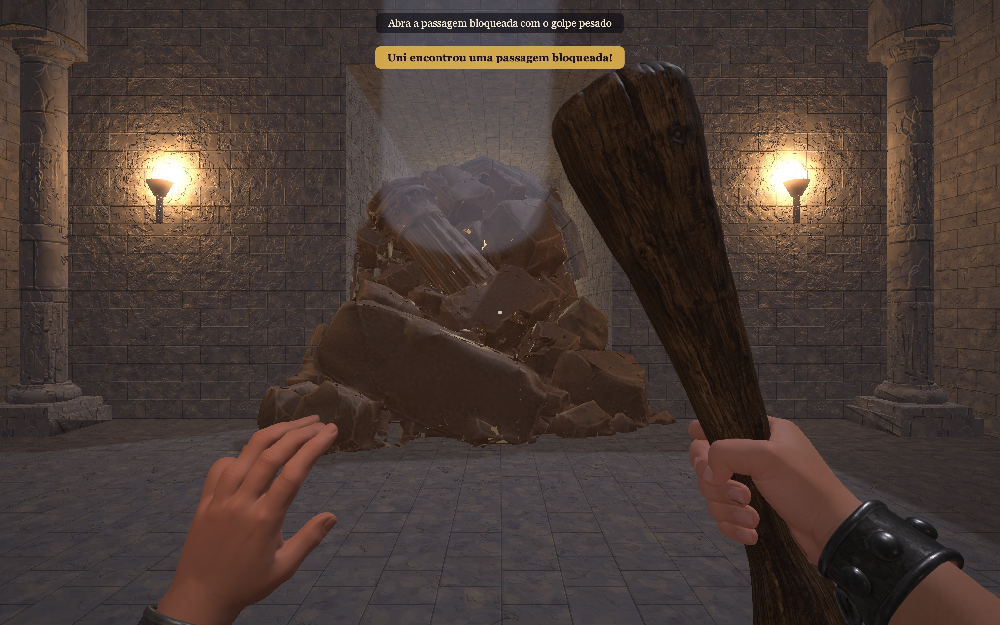
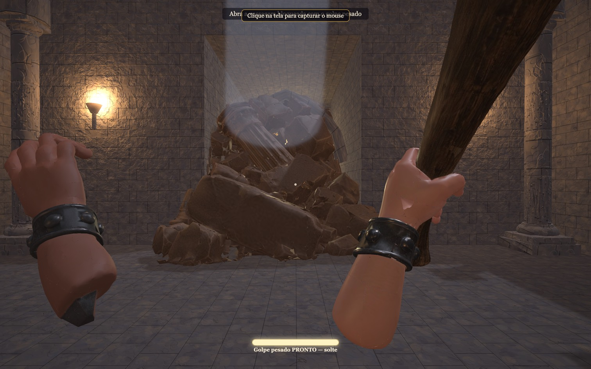
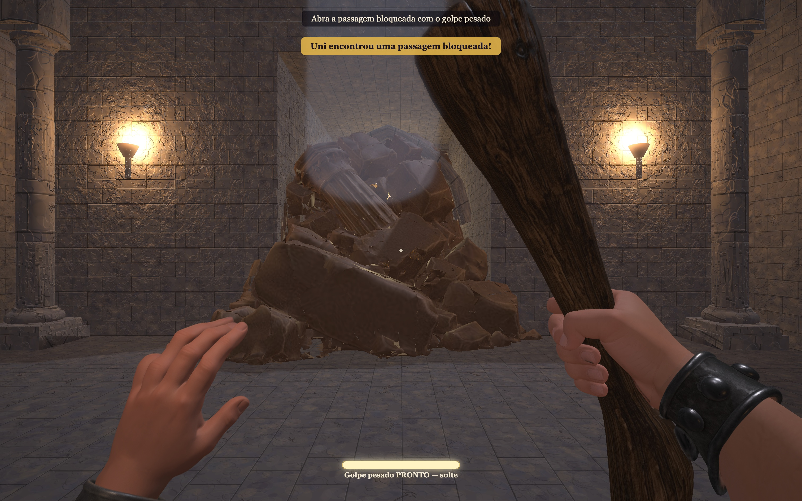

Ticket #25 reaberto · Blender + integração no jogo · Sem novos créditos Meshy.
Alterações, testes, medição e diferenças remanescentes



Gravação a 25 fps. Medição independente do jogo: média 8,33 ms, p95 10 ms, pior 10,4 ms em 3024×1890, durante 12 golpes. A qualidade visual continua sujeita ao seu aceite.